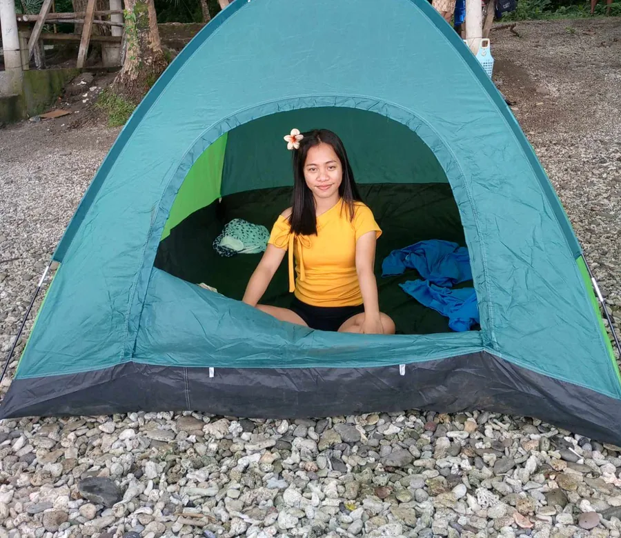
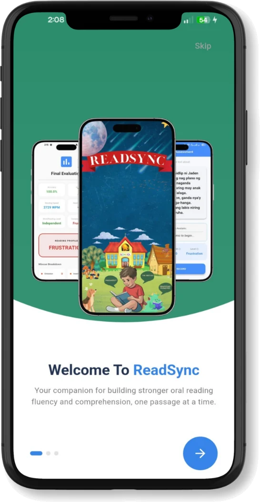
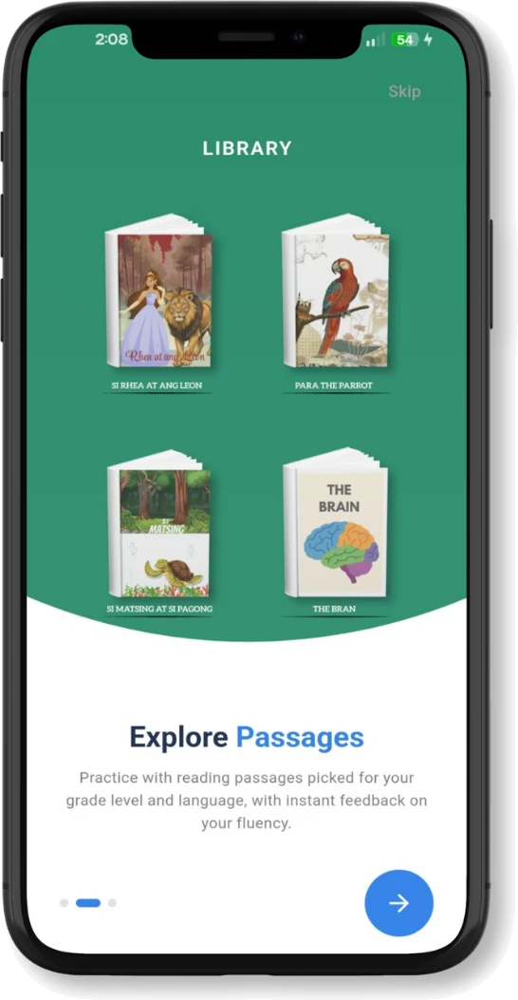
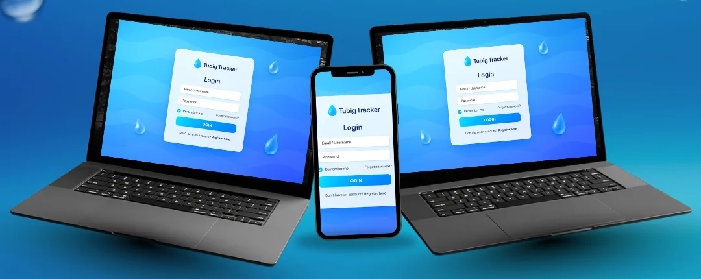
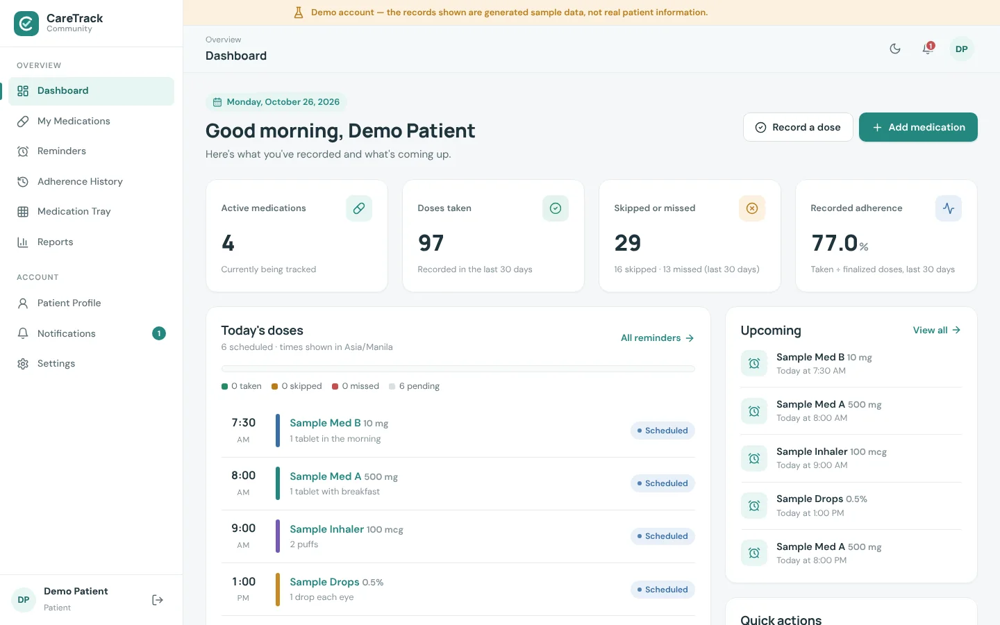
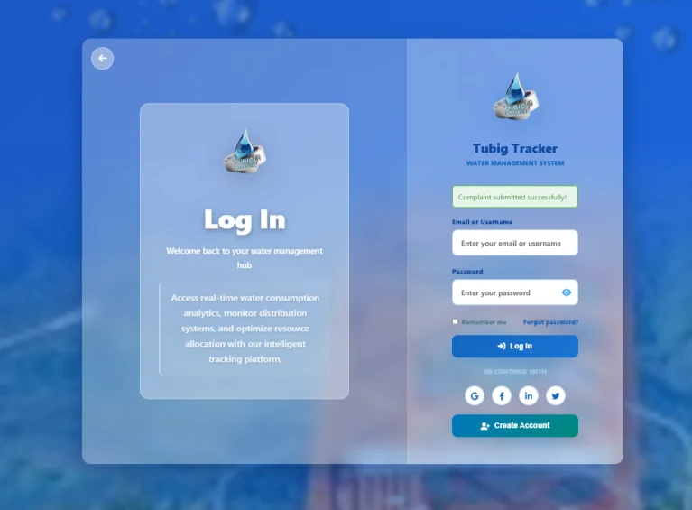
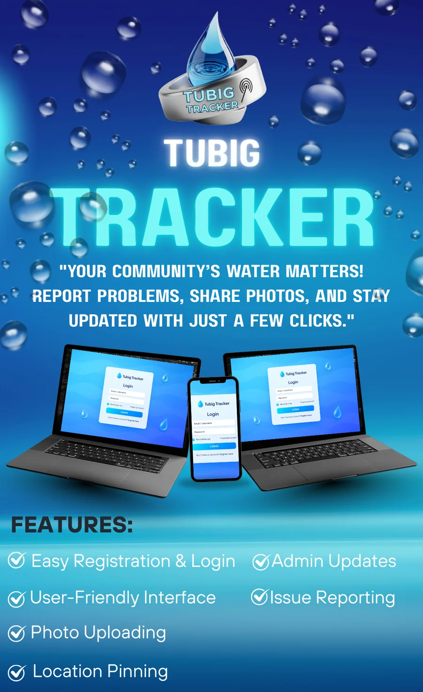
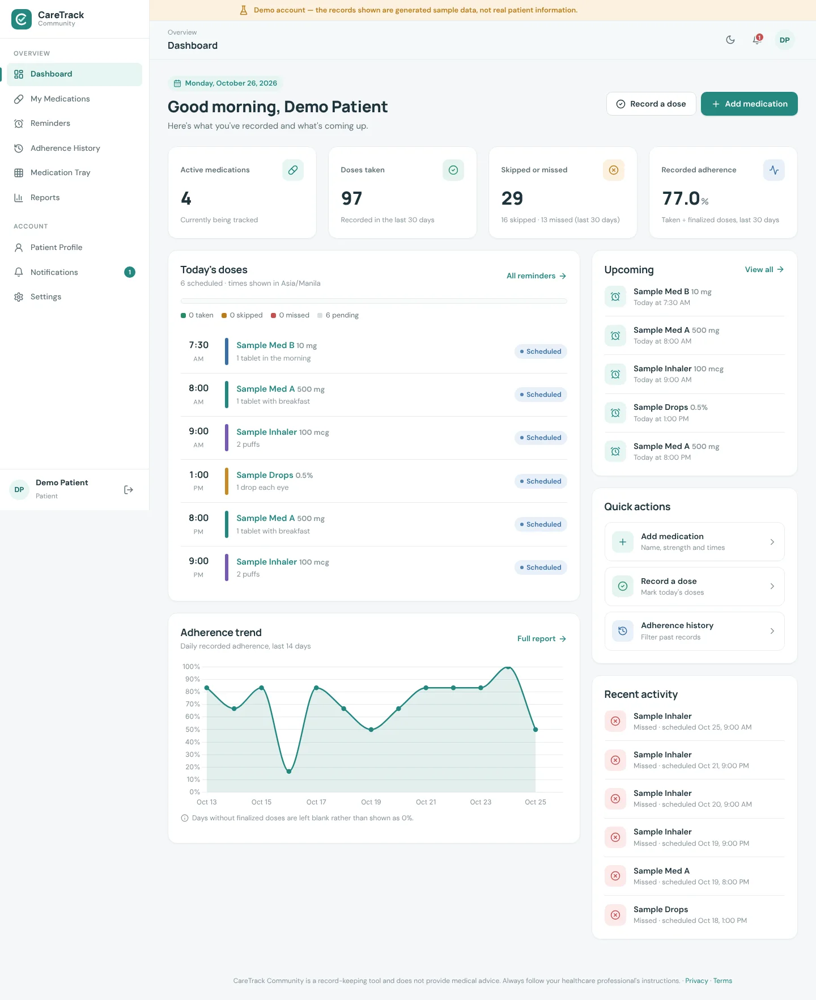

Biliran Province State University
Tertiary · Computer Science, 4th year
Jermaine
Jermaine Mae C. Noquera
Welcome to my portfolio
Computer Science Student Aspiring Developer Creative Problem Solver
I'm a fourth-year Computer Science student at Biliran Province State University. I build mobile apps, websites and programming projects, and I'm looking for OJT and internship opportunities.
Get to know me
A little about my background, my studies and what I do outside of code.
I'm Jermaine Mae C. Noquera, a fourth-year Computer Science student at Biliran Province State University (BiPSU) from Naval, Biliran. I build mobile apps, websites and programming projects.
I serve as President of the School of Technology and Computer Studies Supreme Student Council for 2026–2027. I also edit videos and design pubmats.
Add your interests, career goals and the idea that guides how you work.
Tertiary · Computer Science, 4th year
Secondary · Brgy. Lucsoon, Naval, Biliran · 2022–2023
Elementary · Brgy. Lucsoon, Naval, Biliran · 2016–2017

What I work with
Languages, frameworks and tools I use and keep learning.
The technical skills are still the example list from your brief. Remove anything you don't use, then delete this note.
Frontend
Frontend
Frontend
Backend
Backend
Backend
Database
Programming
Programming
Tools
Tools
Tools
Tools
Creative
Creative
Selected work
Mobile apps and systems I've built. Open a project to see the full story.


A Vosk-based mobile application for oral reading fluency and literacy comprehension assessment.
View details
A water issue reporting and monitoring system designed to help residents report water-related concerns.
View details
A record-keeping app that helps patients track their medications, scheduled doses and adherence over time.
View detailsMy path so far
My leadership roles, education and achievements.
2026–2027
STCS Supreme Student Council, Biliran Province State University
2025–2026
STCS Supreme Student Council, Biliran Province State University
Currently in 4th year
Biliran Province State University
2022–2023
Lucsoon National High School, Naval, Biliran
Grade 12 with honors.
2016–2017
Lucsoon Elementary School, Naval, Biliran
Grade 6 special award.
Proof of learning
Courses I've completed. Select one to see it larger.
Know me more
My background at a glance. Download the PDF to keep a copy.
Computer Science Student · Aspiring Developer
Fourth-year Computer Science student seeking an OJT or internship placement where I can apply my experience building mobile and web applications, contribute to a development team and keep growing as a developer.
Biliran Province State UniversityCurrent
Computer Science, 4th year
Lucsoon National High School2022–2023
Secondary · Graduated Grade 12 with honors
Lucsoon Elementary School2016–2017
Elementary · Grade 6 special award
President, STCS Supreme Student Council2026–2027
School of Technology and Computer Studies, Biliran Province State University
Treasurer, STCS Supreme Student Council2025–2026
School of Technology and Computer Studies, Biliran Province State University
ReadSyncMobile application
Tubig TrackerReporting system
CareTrack CommunityMedication tracking
Let's connect
Have an OJT, internship or job opportunity? Send me a message.
Mobile Application
A Vosk-based mobile application for oral reading fluency and literacy comprehension assessment.
ReadSync is a companion for building stronger oral reading fluency and comprehension, one passage at a time. Learners read passages aloud, and the app assesses their reading using Vosk speech recognition.
The problem ReadSync solves
How you built it, step by step
Challenges you faced and how you solved them
Water Issue Reporting System
A water issue reporting and monitoring system designed to help residents report water-related concerns.
Its message to residents: your community's water matters. Tubig Tracker lets them report problems, share photos and stay updated with just a few clicks.
The problem Tubig Tracker solves
How you built it, step by step
Challenges you faced and how you solved them


Medication Tracking App
A record-keeping app that helps patients track their medications, scheduled doses and adherence over time.
Patients see today's doses, upcoming reminders and their recorded adherence on one dashboard. The demo account runs on generated sample data, not real patient information.
The problem CareTrack Community solves
How you built it, step by step
Challenges you faced and how you solved them
